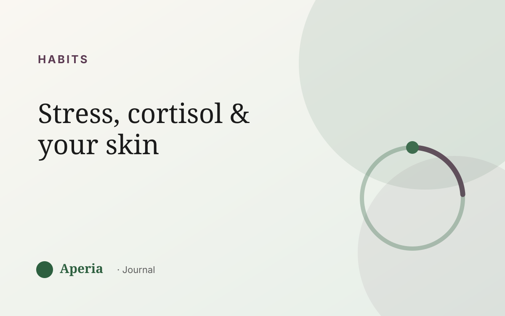

Habits
How stress and cortisol affect your skin
‘Stress breakout’ isn't just a figure of speech. When life gets hard, the body raises cortisol — the main stress hormone — and skin is one of the places that responds. Understanding the link helps you stop taking those breakouts personally.
The cortisol connection
When cortisol rises, it can nudge the skin's oil glands to produce more oil. More oil plus the usual dead-skin turnover means pores clog more easily — and a breakout follows a stressful stretch by a few days, which is why the cause isn't always obvious in the moment.
Stress also slows healing
Cortisol can slow the skin's repair and stress its protective barrier. That means spots may linger longer and skin can feel more reactive or dehydrated during a hard week, even beyond new breakouts.
A stressful week doesn't just add spots — it slows the ones you already have from healing.
The sleep overlap
Stress and poor sleep usually travel together, and skin repairs overnight. So a week that's high-stress and low-sleep hits skin from two directions at once. Often what looks like a mystery breakout is really a rough week catching up with your face.
When it stacks with your cycle
Here's the part people miss: a stressful week that lands on top of your premenstrual flare week is often when skin looks its absolute worst. Two forces line up. Seeing them together is what finally explains a ‘random’ bad skin week.
What actually helps
You can't delete stress, but you can see its footprint. Aperia lets you log stress and sleep next to your daily skin score, so the connection stops being a theory and becomes something you can watch — and plan a little gentleness around.
Common questions
Can stress really cause breakouts?
Yes. Stress raises cortisol, which can increase oil production and clog pores, and it slows the skin's healing. Stress breakouts often show up a few days after the stressful stretch, which is why the link isn't always obvious.
How does cortisol affect the skin?
Cortisol can push oil glands to produce more oil, slow skin repair, and stress the protective barrier — so skin may break out more, heal more slowly and feel more reactive during high-stress periods.
Does stress acne go away?
Stress-related breakouts usually calm as the stress eases and the skin's barrier recovers, especially with steady, gentle care and better sleep. Tracking helps you see it settling rather than guessing.
Why does my skin get worse during exams or deadlines?
High-stress stretches usually come with poor sleep, and skin repairs overnight — so stress and lost sleep hit skin together. If it also overlaps your premenstrual week, the effect stacks.
See your own skin pattern
Track your skin and your cycle together. Free to start.
Download on the App StoreAperia is a self-knowledge tool, not a medical service. It helps you understand and track your skin; it doesn't diagnose, treat or cure anything. If you're concerned about your skin, talk to a qualified professional.